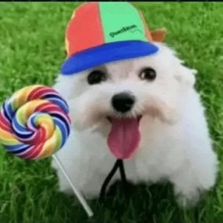

explorando la página
— bienvenido a mi rincón —

RAAAAAHHH Fan #1
en línea
▌
🎮 gamer
🎧 música
🌙 nocturno
✨ caos controlado
✦ lugares donde también estoy
♪ sonando:
Sobre mí
Hola. Soy Attie, aunque en Discord me conocen como RAAAAAHHH Fan #1. Esta página es mi manera de tener un lugar propio en internet, de esos que casi ya no existen.
Cuando era chico me quedaba despierto hasta tarde con la pantalla bajita, para que no se notara la luz en el pasillo. Aprendí a moverme por internet en sitios hechos a mano: foros viejos, páginas con música de fondo y contadores de visita. Nunca se me olvidaron.
Por eso esto se ve como se ve: oscuro, tranquilo, con una ciudad dormida abajo y un cielo que nunca deja de moverse. Quería que entrar aquí se sintiera como abrir una ventana en la madrugada.
Lo mío son los videojuegos, las canciones que se quedan en repeat y los chats de voz que terminan a las tres de la mañana sin que nadie quiera colgar. Si llegaste hasta aquí, quédate un rato: deja un corazón para saber que pasaste.
También colecciono cosas pequeñas: capturas de partidas que ya nadie recuerda, canciones guardadas con nombres raros, mensajes de voz con risas que no van a volver. No los suelto porque me gusta pensar que algún día alguien más los va a necesitar tanto como yo.
Y si llegaste a estas horas de la madrugada, probablemente somos parecidos: de los que buscan rincones tranquilos en un internet cada vez más ruidoso. Bienvenido al club — las reglas son simples: cero prisa, buena música y una ventana encendida para que nadie se pierda de camino a casa.
Cosas que me gustan, por si quieres saber cómo soy: la lluvia de noche con la ventana entreabierta, los menús de los juegos viejos que hacen ruidito al moverte, guardar canciones para después y después nunca llegar, y esa hora exacta en la que el cielo se pone morado antes del amanecer. También me gusta escribir cosas como esta aunque nadie las pida.
Si quieres hablar, Discord es donde realmente vivo: @ineedherbb. No muerdo, contesto casi siempre, y me da igual hablar de nada a las dos de la mañana que resolver dudas serias a mediodía. Los mejores amigos empiezan así, con un «hola, qué haces despierto».
Dicen que internet borra todo con el tiempo. Quizá por eso hice esto: para que exista una foto de quién soy hoy, hecha a mano, sin prisa. Si vuelves en unos meses y esto ya es otra cosa, no te extrañe — yo también lo seré.
Gracias por visitarme. Esta página sigue creciendo poco a poco, igual que yo. ✦
Del blog
ver todas →Bienvenidos a mi rincón
Por qué existe esta página, qué vas a encontrar aquí y por qué me hacía ilusión tener un lugar propio en internet.
LEER →Cómo llegué hasta aquí
-
la era del PC prestado
Primeras noches con la pantalla bajita, juegos flash y esa sensación de que internet era un bosque infinito.
-
foros y páginas hechas a mano
Aprendí que detrás de cada web rara había alguien como yo escribiendo a las tantas. Quise ser esa persona.
-
la era Discord
Chats de voz que terminaban a las tres de la mañana. Ahí entendí que los mejores amigos pueden empezar con un «hola, qué haces despierto».
-
coleccionista de cosas pequeñas
Capturas, canciones con nombres raros, audios con risas. Empecé a guardar todo lo que no quería que se borre.
-
este rincón
Un día decidí que mi pedacito de internet no iba a vivir en la cabeza de una plataforma: lo hice a mano, y aquí está.
Obsesiones del momento
sobrevivir la noche 5 con las luces apagadas tiene otro aura
victorias reales en duos y derrotas épicas igual de divertidas
suena en el reproductor de abajo — sube el volumen
Mi pequeño archivo
cosas que voy guardando con el tiempo — crece cuando menos lo esperas
Deja tu marca
los que pasan de madrugada dejan una nota — se guarda solo en tu navegador
«Hay lugares de internet que se sienten
como volver a casa»